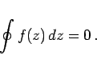
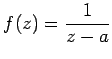

Inhalt Index DeskTop Bronstein

 Funktionentheorie Integration im Komplexen Bestimmtes und unbestimmtes Integral Eigenschaften und Berechnung komplexer Integrale
Funktionentheorie Integration im Komplexen Bestimmtes und unbestimmtes Integral Eigenschaften und Berechnung komplexer Integrale


Wenn die Integration einer Funktion f(z), die in einem einfach zusammenhängenden Gebiet analytisch ist, über einen geschlossenen Integrationsweg K erfolgt, der dieses Gebiet begrenzt, dann ist der Wert des Integrals gemäß dem Integralsatz von CAUCHY gleich Null:
|  | (14.39) |
Enthält dieses Gebiet singuläre Punkte, dann ist der Wert des Integrals mit Hilfe des Residuensatzes zu berechnen.
| Beispiel |
|
Für die Funktion  mit einem singulären Punkt bei z=a ergibt sich der Wert des Integrals für den geschlossenen, im Gegenuhrzeigersinn um a durchlaufenen Weg (s. Abbildung) zu |